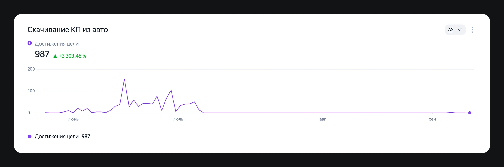

Appruvo
Product Designer · 2025 - по н.в.
Во время полевых исследований в дилерском центре я заметила повторяющееся действие, которое не соответствовало основному сценарию. Разобравшись в причине вместе с командой, мы вынесли нужную информацию в интерфейс — после этого регулярная необходимость в лишнем шаге практически исчезла.

Я наблюдала полный процесс сделки в дилерском центре — от первого обращения клиента до выдачи автомобиля, чтобы увидеть, как сотрудники реально работают с системой на каждом этапе.
В этом процессе заметила повторяющийся паттерн: почти для каждого одобренного автомобиля кредитный специалист скачивал коммерческое предложение (далее — КП).
При этом документ не печатали, не передавали клиенту и часто закрывали сразу после просмотра.
Это выглядело как обходной шаг, поэтому я решила разобраться, что именно специалисты ищут в КП и почему этой информации им не хватает в основном сценарии.

В разговоре со специалистами выяснилось, что само коммерческое предложение им в этот момент не нужно.
Внутри документа они искали сумму удержания с дилера — она могла зависеть от возраста автомобиля, перепробега или отклонения его стоимости от рыночной.
Эта сумма нужна специалисту для расчёта экономики сделки: понимая размер удержания, он может определить, какой объём дополнительных услуг можно включить в продажу.
При этом посмотреть удержание заранее непосредственно в интерфейсе было нельзя. Оно появлялось либо внутри КП, либо уже на итоговых условиях после старта сделки.
В итоге полноценный документ фактически использовался как способ посмотреть одно число.
Проблема оказалась шире одного лишнего действия. Сумма удержания напрямую влияла на экономику сделки, но дилер не мог увидеть её в момент, когда решал, стоит ли продолжать оформление.
Из-за этого специалисты использовали обходные пути: скачивали отдельный документ ради одного значения или запускали сделку раньше времени, чтобы добраться до итоговых условий. Это усложняло работу дилера и создавало лишние операции уже на нашей стороне.

Дать дилеру всю информацию для принятия решения до старта сделки, чтобы убрать обходные сценарии, сократить лишние действия и снизить количество преждевременно запущенных сделок.
Для этого нужно было встроить сумму удержания в основной сценарий работы с автомобилем — там, где специалист оценивает экономику и решает, продолжать оформление или нет.
Вместе с командой мы определили момент, когда специалисту действительно нужна сумма удержания: до старта сделки, когда он оценивает её экономику и решает, стоит ли продолжать оформление.

Поэтому я предложила показывать удержание рядом с условиями по автомобилю — в том же контексте, где специалист уже сравнивает ключевые параметры и принимает решение по сделке.
Мы не стали создавать отдельный экран или новый сценарий: проблема была не в отсутствии функции, а в том, что важная информация находилась слишком поздно и не в том месте.
Небольшое изменение интерфейса устраняло сразу два обходных сценария — скачивание КП ради одного значения и преждевременный запуск сделки для просмотра итоговых условий.


Обходной сценарий практически исчез. После того как сумма удержания появилась рядом с условиями автомобиля, регулярные скачивания КП почти прекратились: вместо постоянных ежедневных скачиваний график практически вышел в ноль.

Я отдельно проверила оставшиеся единичные скачивания. В обоих случаях документ использовали уже по прямому назначению — он понадобился сотрудникам для разбора спорной ситуации по сделке.
Это подтвердило исходную гипотезу: специалистам был нужен не сам документ, а конкретная информация в правильный момент сценария. После её переноса в интерфейс необходимость использовать КП как обходной путь исчезла.
Для бизнеса это означало меньше преждевременно запущенных сделок, меньше ручных откатов статусов и меньшую зависимость рабочего процесса от генерации документа.